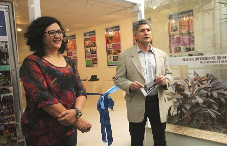
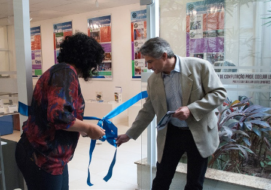

Semcomp Fazendo História

Uma das maiores semanas de computação do Brasil está alcançando a maioridade este ano, quando acontece sua 18ª edição. É a Semana de Computação (Semcomp) do Instituto de Ciências Matemáticas e de Computação (ICMC) da USP, em São Carlos. Para resgatar essa trajetória, que está registrada nas memórias de alunos, ex-alunos, professores e funcionários, o Museu de Computação Odelar Leite Linhares inaugurou nesta segunda-feira, 17 de agosto, a exposição Semcomp fazendo história.
“É a primeira vez que fazemos essa exposição e queremos que ela se repita nos próximos anos, retratando também a melhor Semcomp de todas, que está acontecendo este ano”, disse o diretor do ICMC, Alexandre Nolasco de Carvalho. A inauguração da exposição foi realizada logo após a abertura da 18ª Semcomp, que ocorre até dia 21 de agosto.
“Tão importante quanto mostrar a nossa história para a comunidade externa é mostrar para a comunidade interna que, se hoje temos um evento do porte da 18ª Semcomp, é porque uma história foi construída e nada melhor do que mostrá-la em uma exposição”, ressaltou a presidente da Comissão de Cultura e Extensão do ICMC, Solange Rezende.
A curadora do Museu, Elisa Nakagawa, também destacou a importância do evento: “A Semcomp tem quase duas décadas de trajetória e está atrelada à história do ICMC. É muito relevante termos um espaço aqui no Museu para podermos relatar isso”. Quem quiser conferir a exposição tem até o final de novembro para visitar o Museu, de segunda a sexta-feira, das 8 às 12 horas e das 14 às 18 horas.
Nascimento e evolução - Segundo a professora Regina Santana, do ICMC, as sementes de criação da Semcomp foram lançadas durante um workshop realizado no dia 13 de novembro de 1996 para comemorar os 21 anos do curso de Bacharelado em Ciências de Computação do Instituto. O evento nasceu para promover discussões que são de interesse dos estudantes e estimular a interação com profissionais que já estão no mercado de trabalho.

Desde os primórdios, a Semcomp é organizada com a ajuda dos alunos que fazem parte do Programa de Educação Tutorial (PET), promovendo atividades como palestras, minicursos e painéis. Apesar de completar 19 anos – pois a primeira edição do evento aconteceu em 1997 – a Semcomp não foi realizada em 2002, por isso, este ano está em sua 18ª edição. “O motivo que levou à não realização está ligado a uma crise no PET. Em 2002, o programa não teve bolsas e os alunos ficaram desmotivados”, revelou a professora Regina.
Em 1997, quando a Semcomp foi lançada, o ICMC oferecia apenas um curso na área de computação, o Bacharelado em Ciências de Computação, disponibilizando 40 novas vagas a cada ano. De lá para cá, muita coisa mudou. Hoje, há no Instituto outros dois cursos nessa área – Sistemas de Informação e Engenharia de Computação – e são oferecidas, anualmente, um total de 190 novas vagas.
A expansão desse campo do conhecimento no Instituto acompanha o desenvolvimento da área de computação no mundo e a Semcomp segue o trilho desse trem: passou dos 138 participantes da 1ª edição para cerca de 850 atualmente. E se no começo foram apenas uma dúzia de atividades, agora esse número ultrapassa 30.
Texto: Denise Casatti - Assessoria de Comunicação ICMC/USP
Fotos: Reinaldo Mizutani - Assessoria de Comunicação ICMC/USP e Leonardo Ribeiro